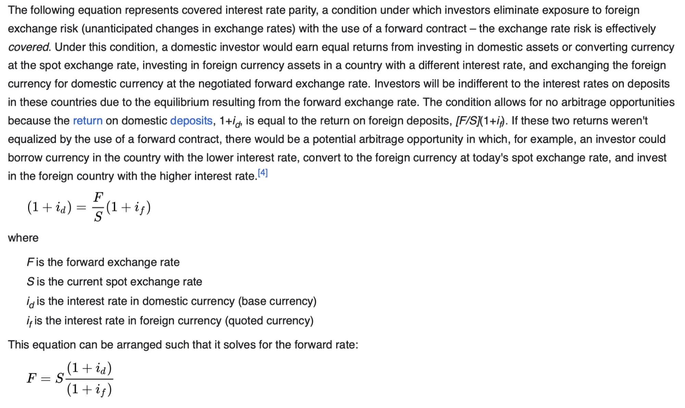
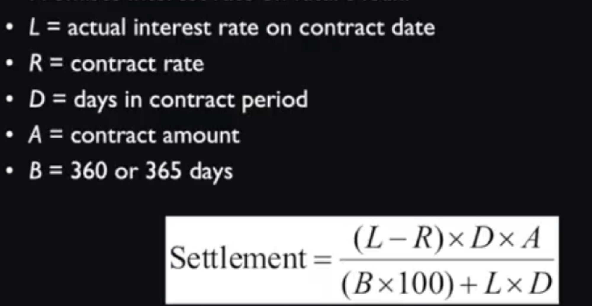
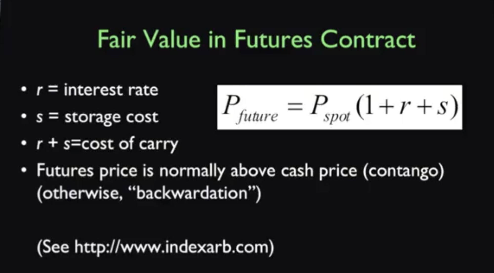
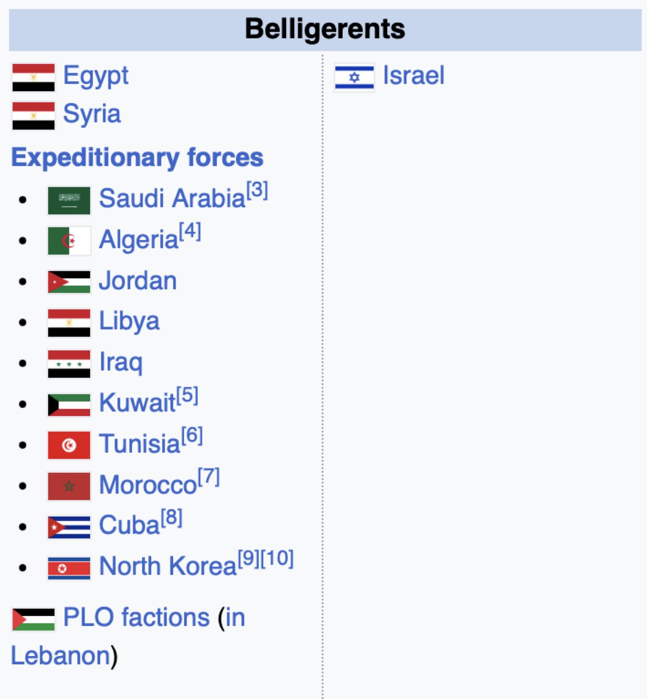
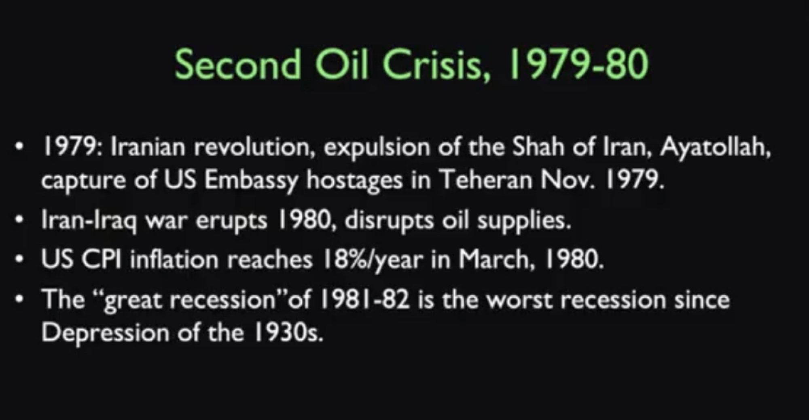
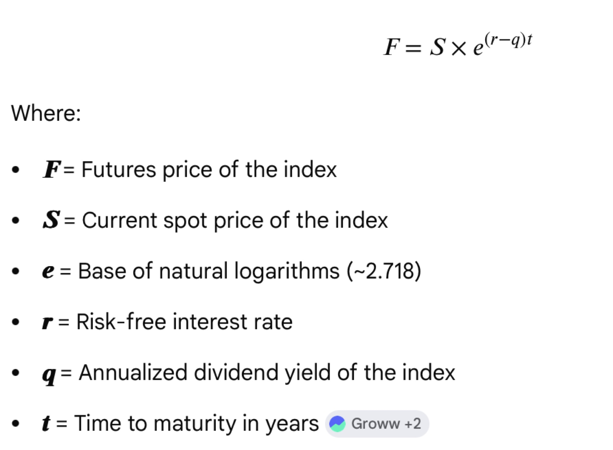

Margin Notes · Note 2
Financial Markets, Module 5
A derivative market reflects a market in parallel with another market, think of a derivative market as an exchange of contracts that are used to transfer risk between parties, at a price set by expectations about an underlying asset, without necessarily transferring the asset itself.
Forward contract: a contract to deliver at a future date (which we either call the exercise date or maturity date), both sides are locked into the contract because they must legally buy or sell the underlying asset.
These contracts actually trade physical assets, so they are mainly OTC (Over the Counter)
OTC: trading done outside of a formal exchange, it involves two parties directly.
FX: Foreign exchange (global market for trading national currencies)
FX Forwards are like pairs of zero coupon bonds
Forward rates reflect interest rates in the two currencies
Forward interest parity: a financial theory that states that the difference in interest rates between two countries must equal the difference between the forward exchange rate and the spot exchange rate (current real time price to trade one currency for another, usually settling within two business days)


Forward Rate Agreements: Custom OTC agreement that allows two parties to lock in an interest rate for a future period.


Notice: the Forward Rate Agreement does not actually have anything linked to it, but is instead a bet on what the (L-R) will turn out to be. If you look at the definitions, you will notice that we are only subtracting what the interest rate will be at the end of the contract (which relies on a market benchmark, such as the SOFR or EURIBOR) by what the agreed upon interest rate for the contract is, if it turns out to be negative then the buyer must pay and if positive he receives. Therefore, you could think of it as a bet on how much it will cost to borrow a currency. And what’s interesting is that for an OTC FRA, they usually don’t even require a formal margin. What they do instead is either decide whether you will be capable of paying with a credit line (where the bank will extend the buyer a limit based on their creditworthiness and trusts them to pay the settlement) or a CSA which means Credit Support Annex (collateral agreement bolted onto the master contract, the ISDA Master Agreement, which defines the framework behind any agreement).
Futures Contracts: differ from forward contracts, because contractors deal with an exchange rather than each other, and thus do not need to assess each other’s creditworthiness.
They are standardized retail products and rather tend not to be custom OTC contracts.
Futures contracts are reliant on margin calls to guarantee performance.
The first futures market began in Osaka, 1670s. It was the world’s only futures market until the 1860s.
It was a center for rice trade with 91 rice warehouses in 1673. Rice was considered the underlying primary market.
Futures exchanges had precise definitions on quality, delivery, date and place and even had experts evaluate rice quality and clearinghouses for contracts. These are the derivatives, because it relied on these factors.
CBOT: Chicago Board of Trade, founded in 1848
CBOT merged with the CME (Chicago Mercantile Exchange) in 2007 and now calls themselves the CME group.
CME Clearinghouse: A CCP (Central counterparty) which acts like a neutral counterparty to guarantee performance and settlements for trades.
All exchange-traded contracts pass from the broker to the clearinghouse. A buyer who exchanges his funds for a contract receives his contract and transfers his funds that pass through the broker and then the clearinghouse. This does not occur for OTC Contracts. BUT the counterparty does not always require 100% of the total contract value, and instead, about 5-10% of it.
Why would a farmer prefer to trade rice futures over just standard cultivating and selling?
Futures allow a farmer to lock in a price for a future delivery, that price is set, no matter the current market price. For a farmer, this ensures that his revenue will cover his expenses.
But this requires three things:
- A short position on either a (USD) sum or a contract
- A Hedge account on a futures exchange
- A physical trade
Short position: A short position is when a user will borrow either money (will explain), contracts or shares from a brokerage, to then sell whatever he would like to sell on the market and buy it back, which usually comes at a difference that he must pay back or keep
When it comes to money, he can buy the contract/share instead and then sell it at a difference.
Buying or selling futures contracts: When buying, one must post initial margin with the futures commission merchant
Most people do not have intention of taking delivery of the commodity
It’s the same as when one sells a contract, usually there is no intention of selling the commodity
Every day, the exchange defines a price called the settlement price, and that is the last trade on that day. Every day until expiration, a buyer’s margin account is debited or credited with the amount:
Change in settlement price times contract amount
If the contract is cash settled, on the last day, the margin account is credited with:
(cash settlement price – last settlement price) × contract amount
If the contract is physical delivery, on the last day, the buyer must receive his commodity
The “CASH” settlement: No physical delivery
The “cash settlement price minus the last settlement price” is a way to show the difference you would have made if you actually had the commodity. When you subtract from the cash settlement, it looks solely on the difference between the price you paid to what the futures contract is at.
It’s looking for the difference between what the commodity/stock/whatever is currently at to what you bought it at initially.


Fair value: price of equilibrium
OPEC: Organization of Petroleum Exporting Countries
Established in 1960 by Iran, Iraq, Kuwait, Saudi Arabia and Venezuela
More countries joined afterwards:
- Qatar (1961)
- Indonesia and Libya (1962)
- Abu Dhabi* (1967)
- UAE (1974)
- Algeria (1969)
- Nigeria (1971)
- Ecuador (1973)
- Gabon (1975)
OPEC is quite weak today because of conflict in the Middle East
*Abu Dhabi was separate to the UAE before 2nd December of 1971
Brief beginning of OPEC
It began in 1949 after Venezuela suggested to the 4 other founding countries to build an establishment to exchange views and tighten relations in order to export oil more efficiently. At that time, the USA was the top oil exporter and consumer, and OPEC countries were motivated to form a counterweight.
Significance of OPEC and the Arab League during the Yom-Kippur war of 1973 (which led to the First Oil Crisis of 1973-74)
In October 1973, the OAPEC (Organisation of Arab Petroleum Exporting Countries) declared significant production cuts on oil and an embargo on the USA due to their support of Israel.
The War ended like this:


And Israel won, so they had a reason to be pissed. That wasn’t the first time they tried to enact an embargo on the US, there was a very ineffective attempt after the Six Day War of 1967. The result of their decision led to a sharp rise in oil prices and revenues. It led to the UK temporarily allowing a three-day workweek and a sharp rise from $3/barrel to $12/barrel.


All the instability led to the Strategic Petroleum Reserve (1975) in caverns in Louisiana and Texas. There is only a 60-day supply.
In 2000, US President Clinton established a 2 million barrel heating oil reserve in NY and New Haven to help stabilize US heating oil prices. The Government has sold from their reserves on a number of occasions since 2000 when price triggers were hit.
The Persian Gulf war of 1990-91 also made an impact.
That began on August 2nd 1990, when Iraq launched a surprise invasion on Kuwait under Saddam Hussein. The UN gave Iraq a deadline to withdraw by Jan 15 of 1991. But they didn’t… That led to an air bombardment of Iraq and its Kuwaiti positions. Eventually, this led to an Allied ground invasion. The war ended on Feb 26 of 1991.
- In 2008, at the height of the financial crisis, the price per barrel once hit $113/barrel.
- In 2016, that fell below $30/barrel
- Right now, an OPEC basket is at $77/barrel (as of 6 Aug)
Stock Price Index Futures:
- Cash settlement rather than physical delivery
Cost-of-carry model for pricing index futures


“Cost of Carry”: cost of owning an asset
Federal Funds Futures Market
- It was created by CBOT in 1988,
- The settlement price is 100 minus annualized FFR (Federal Funds Rate)
- Shows timing of expected actions of FOMC (Federal Open Market Committee)
- One-month-ahead forecast errors typically in the ten to twenty basis point range.
Backwardation and Contango: Describes the shape of a commodity futures curve:
- Backwardation means the future price is below the commodity’s spot price
- Contango means the future price is above the commodity’s spot price
Both are usually due to cost-of-carry (insurance, interest, storage, etc…)
Federal Funds Futures Market: Financial market where investors trade contracts based on where the Federal Reserve will set interest rates. The contracts trade on the CME (Chicago Mercantile Exchange), and it tracks the EFFR (Effective Federal Funds Rate), which is the daily exchange rate banks charge each other for overnight loans. The Pricing model resembles this:
Expected Interest Rate = 100 − Contract Price
Options
A summary from the FM Course, see the provided document for additional, but important information.
The basic kinds of options available
- Call Options, which give the right to buy
- Put Options, which give the right to sell
With options, one pays money to have a choice in the future, the exercised choice usually depends on the underlying asset price. Options are truncated claims on assets that you usually buy in sets of 100, called contracts.
The terms of an Options Contract
- Exercise date (the day you must sell or close your contract, or else it becomes worthless because we now consider it expired)
- Exercise price (the price at which it closes at, and therefore what determines whether you made a profit or a loss on the contract)
- The Definition of the underlying and number of shares
In/Out the Money: This says whether the option’s underlying price is higher or lower than the current market price.
If it's In the Money, then the share price is more advantageous to the option’s strike price (the price you believe it will be higher or lower than, depending on whether it is a call or put option), but it depends on what kind of option it is:
- ITM* Call Option: the strike price is lower than the current price
- ITM Put Option: the strike price of your option is higher than the current price
- OTM* Call Option: the strike price is higher than the market price
- OTM Put Option: the strike price is lower than the market price
ITM*= In the Money
OTM*=Out the Money
Bid vs Ask Price
- The Bid price is the price a dealer is offering you for your options.
- The Ask price is the lowest price a seller is willing to pay.
Kenneth Arrow’s 1964 article: The inefficiency of economic markets lies in how much accessible risk there is to take.
Stephen Ross made this idea a raison d’être of options markets.
In his 1976 article “Options and Efficiency” he said that financial options have a central role in “completing the market”
(if you are interested in learning more about this, there is this really interesting (but short) paper that speaks about it and makes a correlation between these things
see: https://personal.lse.ac.uk/martiniw/steve.pdf
Obviously the math this guy is about to show might seem completely unreadable, just read the paragraphs or if you want we will discuss it as a group and go through it)
(actually, even I don't get allat so I’ll make it a task to understand)
Shefrin and Statman: “Silver lining theory”
“During the 1980s and 1990s, Shefrin and Statman applied behavioral ideas to the field of finance, calling their approach "behavioral finance," a term which had not previously been in use. Their work offered explanations for such phenomena as the dividend puzzle, investors' disposition to sell winners too early and hold losers too long, the design and marketing of financial products, behavioral beta, behavioral portfolio theory, and a behavioral approach to financial market regulation based on the concept of fairness and/or ethics. Shefrin and Statman's paper on the dividend puzzle was the first in finance to apply prospect theory, the approach developed by Kahneman and Tversky to explain how people choose among risky prospects.”
“Shefrin and Statman coined the term "disposition effect" for investors' disposition to sell winners too early and hold losers too long. They proposed that the disposition effect reflects four psychological elements, namely loss aversion (from Kahneman and Tversky's prospect theory value function), mental accounting, regret avoidance, and lack of self-control. Shefrin has long argued that the disposition effect reflects how these four elements combine. In particular, he contends that prospect theory alone does not explain the full extent of disposition behavior, especially its self-nudging features. The disposition effect has become the most studied, in the academic finance literature, of psychological behavior patterns exhibited by individual investors.”
*I didn’t write this, it’s from Wikipedia. When it comes from elsewhere, I always mention it.
See: https://www.jstor.org/stable/2327802?googleloggedin=true&googleloggedin=true Also: https://www.jstor.org/stable/183904, that is originally where the term “silver lining” came from, then used for this: why do investors prefer cash dividends?
Silver lining theory
‘By purchasing shares that pay good dividends, most investors persuade themselves of their prudence, based on the expected income. They feel the gain potential is a super added benefit. Should the stock fall in value from their purchase level, they console themselves that the dividend provides a return on their cost.’
Observe in fig. 3 that the right-most segregation region is associated with a positive capital gain; therefore, the investor’ segregates in order to obtain ‘super added benefit’ from this gain. But in the left-most segregation region, where a sizeable capital loss is incurred, he segregates in order to treat the dividend as a silver lining with which he can ‘console himself’. In the intermediate region of ‘small’ capital losses, he integrates in order to offset part or all of the capital loss by the dividend.
Extract from Shefrin and Statman (1984), explaining the Silver Lining.
Futures Exchanges: a market that trades options on futures.
In the Money, Out the Money, Exercise Date and Strike Price
- At the Exercise date of an option, where the current price stands depending on the Strike Price will decide whether your option is worthless or valuable at that moment.
- If your option is worth less than what it would be if it was at the Strike Price, you are OTM, and therefore your option has no intrinsic value.
The Put-Call Parity Relation:
- Put-Call parity is a core principle that defines the fixed relation between a European Put and Call option.
Put option price — Call option price = Present value of strike price + Present value of dividends — Price of stock
Price of stock = Call price + PDV Strike + PDV Dividends — Put price
- For European options, this must hold (up to small deviations such as transaction costs), otherwise there would be arbitrage profit opportunities
Personal point of interest:
- I’ve heard of an exotic derivative, which is called the lookback option, only sold over the counter between large firms.
- Yet, it stands out because it does something most contracts cannot do — only look at the maximum or the minimum of a price in order to secure the most favorable payoff.
- But on the other hand, the strike price is decided at the expiration date using the asset’s lowest price (for a call) and highest (for a put). That's only if the exact lookback option includes a floating strike price.
- Oftentimes, the strike price is fixed.
- But obviously it’s not free money, these cost much more than ordinary derivatives — As a rule of thumb, these kinds of derivatives usually cost 2-3 times more than ordinary European derivatives.
- As an ECP (Eligible Contract Participant), you have a chance at being able to trade these kinds of derivatives through your bank.
- Or, with a broker, some having it inside “structured notes”
Sources
- Lecture slides: Robert Shiller, Financial Markets, Yale University.
- Interest rate parity and the belligerents of the Yom Kippur War: Wikipedia.
- Index futures formula: Groww.